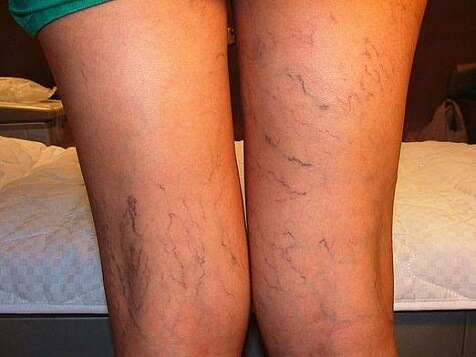

Marina Volcova este o gimnastă vestită.
Marina Volcova este o gimnastă vestită.
Campioana mondială a reuşit să se elibereze de problemele cu varice în timp de o săptămână. O metodă profesionistă!
Este posibil de-a trata varice chiar dacă vă ocupaţi de sport, şi chiar dacă picioarele voastre sunt întotdeaună încordate, ştiu după experienţa mea. - confirmă Marina Volcova .
Marina Volcova este o gimnastă vestită.
Marina Volcova este o gimnastă rusă vestită şi tânără care de câteva ori a devenit campioana mondială la campionatul mondial All-around. Marina a stabilit un record, este cea mai tânără gimnastă care a obţinut o medalie de aur la campionatul mondial All-around.
- Marina, este recordul dumitale , eşti cea mai tânără gimnastă care a obţinut o medalie de aur la campionatul mondial All-around!!! Povesteşte-ne despre activitatea dumitale.
- Gimnastica ritmică este cea mai frumoasă disciplină sportivă feminină. Desigur este o trudă enormă, trebuie să mă antrenez mult, pentru că oricare element este foarte greu de făcut. Nu-mă pot lăsa să-mă duc acasă fără să prelucrez toate mişcările care nu au plăcut antrenorului meu. Mă antrenez vreo 5-6 ore pe zi.
- Marina te antrenezi foarte mult. Ai avut vreodată probleme cu sănătate legate cu eforturile acestea?
- Desigur, fiecare exerciţiu are influenţa asupra sănătăţii şi a trupului. După o jumătate de an de antrenament am început să sufăr din cauza varicelor. Picioarele mele au arătat urât! Mai bine să nu-mi-o aduc aminte! Vânele mele au fost umflate şi albastre, am simţit o durere tare!
 Marina se ocupă de gimnastică din copilărie (foto:
arhivă proprie)
Marina se ocupă de gimnastică din copilărie (foto:
arhivă proprie)
 Şi iată la ce asta a adus după acest termen
de ocupaţia gimnasticii (foto: arhivă proprie)
- Pot imagina cum ai vrea să scapi de aceasta!
- Da, am încercat tot posibilul! Procedeele scumpe şi tratamentul din străinătate. Şi desigur n-am ocolit şi medicina populară. Chiar mi-am dat acordul la operaţiune, dar în sfârşit apoi n-am putut să-mă ocup de sport foarte lung timp.
- Şi ai avut succes?
- N-am avut succes deloc. La început s-a părut ca şi cum tot e bine, ca şi cum tot a reuşit căci simptomele pe care am avut au dispărut. Dar în curând au revenit. Uneori m-am simţit şi mai rău. Din păcate n-am ştiut deloc ce să fac: n-am putut să mă antrenez nici n-am putut îmbunătăţi situaţia:...
 Cu colega şi prietena de antrenament
Elizaveta Pinciuc.
Cu colega şi prietena de antrenament
Elizaveta Pinciuc.
- Iar ce poţi spune despre operaţiunea pe care ţi-a făcut?
- Cum să spun, a fost metoda cea mai bună din toatele pe care am încercat . Dar este o metodă bună numai dacă este gratis, căci este prea scumpă pentru oameni de rând . Şi desigur este o mare pierdere de timp pentru că nu se poate antrena mult. Este un mijloc foarte scump, nu pentru toţi. Eu personal nu pot să scap atâtea antrenamente şi campionate. Căci cariera mea sportive se poate termina aşa. Am încercat odată şi basta! Şi în sfârşit operaţiunea nu rezolvă problema, numai uşurează maladia pentru un anumit timp.
- Păi când privesc picioarele tale pot ghici că totuşi ai găsit rezolvarea problemei...
- Da, colega mea şi prietena cea mai bună, adversarul meu cum o numeşte lumea, Elizaveta Pinciuc m-a ajutat. Odată mi-a dat o cutiuţă în timpul antrenamentelor şi mi-a zis «Faci un curs de tratament cu asta! Avem nevoie de tine aici, nu la spital!"
 Rezultatul după operaţiune (foto doi),
rezultatul după gel (foto trei).
Rezultatul după operaţiune (foto doi),
rezultatul după gel (foto trei).
- Şi asta a fost de ajuns să te eliberezi de varice?!
- O poţi crede?! Gel pe care m-a sfătuit-o Elizaveta m-a ajutat în realitate!

- Şi care este mijloc? Povesteşte-ne secretul tău!
-Aici nu este nici un secret! A fost o gel profesinistă pentru tratarea varicelor , este un produs de tehnologia japoneză care a fost creat cu ajutorul savanţilor europeni. Este socotit cel mai sigur mijloc de tratarea varicelor graţie componentelor lui. Toate componentele sunt naturale.
- În realitate te-ai eliberat de toate problemele numai cu ajutorul cremei? Cum lucrează?
- Spun sincer am folosit numai ! (ride, ndr). Gel aceasta miraculoasă luptă problema sigur, stabileşte circulaţia sângelui şi diminuează tensiunea în vâne. Mă ajută foarte mult după antrenamentele prelungite!
Nu ştiu totul despre fiziologie, dar ceea ce este important pentru mine este că graţie acestei creme m-am eliberat de problemă! Dar se poate afla mai mult dacă vreţi despre acest produs pe site-ul producătorului

- Marina, cât timp este necesar pentru scăparea de această problemă cu vâne? Cât trebuie să folosim ,ca să ajungem la succes?
- Trebuie s-o folosiţi două ori pe zi: dimineţa şi seara înainte de culcare .
Nu vei crede dar am deja văzut îmbunătăţirile după 3 zile! Edemele au dispărut şi picioarele au deja arătat bine! M-am simţit foarte bine după antrenamente.
 Marina Volcova
Marina Volcova
- Adică deja după 3 zile ai văzut îmbunătăţiri?
- Da. Încă după 2 zile am remarcat că vânele sunt greu de văzut pe picioare! Atunci pot lucra uşor ca manechin!
- Cât timp ai cheltuit ca să vindeci picioarele tale în total?
- N-am calculate zile dar aproximativ o săptămână. Iar apoi am continuat să folosesc gel în continuare de 3-4 zile pentru că mi-a fost frică că rezultatul va dispărea
Dar m-am greşit! Vânele pe picioare au terminat să mă deranjeze. Am uitat-o deloc şi am început o viaţă nouă! (Zâmbeşte)
 Marina Volcova
Marina Volcova
- Vrei să urezi ceva cititorilor noştri?
- Aş dori să spun că nu este numai alcătuire de diferite elemente, care intră în conţinutul acestei creme miraculoase care tratează toate problemele legate cu varice. Ceea ce intră în conţinut este creată de către savanţi prin tehnologia unică şi este fixat unic. Adică fiţi atenţi, există multe contrafaceri! Este important să cumpăraţi gel care a urmărit toate certificările: o cumpăr numai pe site-ul oficial al producătorului. Este un produs eficace cu garanţia de 100% , nu este contrafacere .
Vă urez să găsiţi pe sine însuşi, şi să învingeţi problema asta îngrozitoare de varice! Totul va fi bine, trebuie să aveţi încredere! Dobânda cea mai bună este când vă simţiţi bine. Ce bine este când vă treziţi în dispoziţie bună. Şi cel mai important este să înţelegeţi că veţi reuşi!
Sper că experienţa mea vă va ajuta şi vă va da puterile să învingeţi maladia! Urez tuturora noroc în lupta cu varice!
2020
Comentarii
Bună Marina, eşti o fată bună şi o gimnastă talentată! Istoria ta mi-a motivate foarte mult! Am asemenea probleme cu vâne pe ambele picioare, dar picioarul drept mă deranjează mai mult: mă doare de stinghie până la genunchi, iar seara nu mai pot suporta. Totuşi încă nu m-am înscris la doctor, vreau să încerc să tratez singură. Apoi o să scriu şi să povestesc cum merge
Vă mulţumesc Marina! Ieri am primit coletul meu. Totul e OK. Acum am început să folosesc gel. Aştept rezultate în 5 zile!
Trebuie să purtaţi încălţăminte fără toc sau cu un toc mic. Asemenea probleme cu vâne pot apărea din cauza tocurilor înalte! Gândiţi numai cum să cumpăraţi nişte pantofi mişto dar apoi vă plângeţi de picioarele voastre urâte.
Bună Marina! Am comandat gel.
aştept cu nerăbdre când voi primi coletul meu! :)
Fiica mea mi-a adus această gel din Japonia acum 5 ani, nu e nimic nou!
Mişto! Am deja comandat şi am început să aplic . După câteva zile vă voi povesti succesele mele.
Produsul nu este nou, toată lumea ştie această gel. Cu 2 ani în urmă mama mea şi-a rezolvat problemele cu vane mulţumită ei
În statele unite o folosim deja 5 ani! Toate fetele de la serviciu arată ca vedete de Hollywood!
Bună... aplic gel în timp de 3 zile şi chiar nu ştiu cum vă pot mulţumi! Mersi Marina!!! Picioarele mele sunt ca noi!
A trecut numai 4 zile şi văd deja rezultatul! Atunci picioarele mele arată mai frumos! Sunt foarte fericită!
Am cumpărat gel şi o ador! A trecut numai o săptămână şi totul a devenitcu mult mai bine. Cine ar gândi nu am aşteptat...ţinând în cont preţul ei este pur şi simplu un cadou.
Marina am ştiut despre această gel, pentru că am cumpărat-o în China foarte demult. Problemele cu vâne au dispărut repede, nu-i cool? Sfătuiesc! Tuturora!
Soţul meu este încântat! Spune că trebuie să particip la concursul Miss picioarele frumoase, hah
lucrează, am comandat pe siteul oficial fără plată dinainte şi coletul a venit în timp de 6 zile. Vânele au dispărut după o săptămână.
Nu sunt singură! M-am eliberat de problema picioarelor numai după o săptămână. Chiar nu mi vine să cred :-D
Picioarele nu mă mai dor şi arată foarte frumos!! Super! Le sfătuiesc tuturor fetelor!
Şi eu ştiu . Mătuşa mea nu se mai plânge că îi dor picioarele (-;
Salut! Această gel este cea mai bună, am trebuit să aştept numai o săptămână pentru a scăpa de boală .
Este ceva incredibil! Picioarele mele acum sunt frumoase şi sănătoase! Apropo am obţinut coletul după 3 zile.
Bună dimineaţa doamnelor! Soţia mea a cumpărat gel aceasta şi acum picioarele ei sunt perfecte! Nu pot formula cu cuvinte cum fericit sunt! Vă sfătuiesc!
nimic nou!Fiecare femeie ştie această gel: dacă cineva nu ştie înseamnă că nu vrea să scape de boală.
Mulţumesc pentru articol. Marina eşti cea mai bună! Sper că cariera ta va fi norocoasă! Mă duc să comand gel .
Este ceea ce am dorit! Toată lumea va invidia!
În China toţii folosesc această gel şi lucrează perfect! Ca totdeauna aflăm cei ultimii despre tot şi aşteptăm un secol ca să primim produsul...